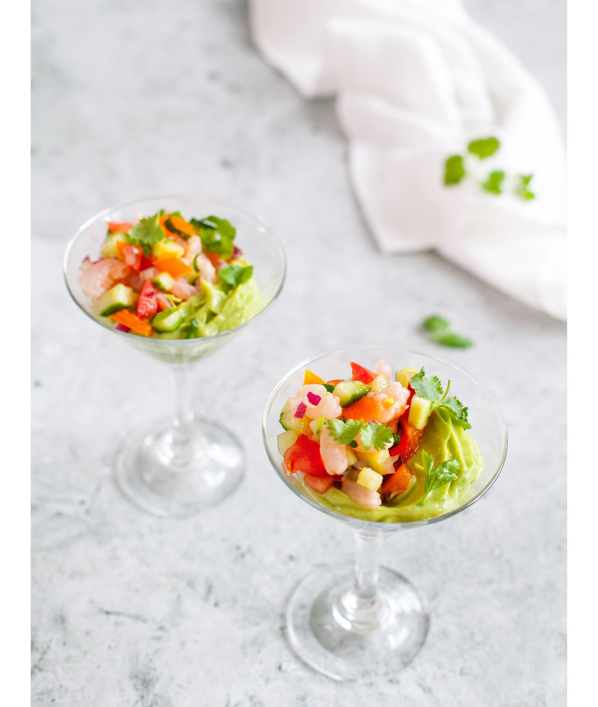

Классическое перуанское блюдо в праздничной версии: маринованные в соке лайма креветки на воздушной подушке из кремового авокадо. Кислота воздействует на белки почти так же, как термообработка — это денатурация. Готовить за 2–3 часа до подачи. Крем из авокадо можно использовать и для тартара из свеклы.
Возможность хранить: да. Заморозка: нет.
для севиче:
для крема из авокадо: